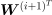

Layers¶
In this section, we will cover all relevant layers implemented by Slugnet, and their specific use cases. This includes convolutional neural networks and layers associated with them.
Fully Connected Neural Networks¶
Slugnet implements fully connected neural networks via the Dense
layer. When operating in feedforward mode, the dense layer computes the
following term
![\[
\bm{a} = \phi(\bm{W}^T \bm{x} + \bm{b})
\]](_images/math/fd625308ce6c981502635ae2d2b1ba0e45e3e5ec.svg)
where is activated output,  is the activation function,
is the activation function,  are weights,
are weights,
 is the bias term. The dense layer does not
implement any activation function, instead it is injected
at runtime via the
is the bias term. The dense layer does not
implement any activation function, instead it is injected
at runtime via the activation parameter. This mean
that on feedforward, the dense layer is incredibly simple,
it performs matrix multiplication between an input matrix
and a matrix of weights, then adds a bias vector, and
that’s it.
On feed backward, or backpropagation, the dense layer is responsible for calculating two values. The value defined will be used to calculate the weight and bias gradient at this layer. The value will be used to calculate gradients at all previous layers. This process is easy to follow in the backpropagation algorithm given in the introduction section of this documentation.
When looking at the implementation of Dense, there is a notable absence
of 
and .
This is because their dot product is calculated in the previous layer.
The model propagates that gradient to the current layer.
![\tikzset{%
brace/.style = { decorate, decoration={brace, amplitude=5pt} }
}
\draw [brace] (6.25,0.25) -- (1.75,0.25) node[yshift=-0.5cm, xshift=2.25cm] {Input Layer};
\draw [brace] (0,5) -- (8,5) node[yshift=0.5cm, xshift=-4cm] {Dense Layer};
\foreach \y/\n in {2/3, 4/2, 6/1}
\draw(\y,1) circle(0.5cm)
node {$x_{\n}$};
\foreach \y/\n in {0/1, 2/2, 4/3, 6/4, 8/5}
\draw[fill=gray!30](\y, 4) circle(0.5cm)
node {$h_{\n}$};
\foreach \x in {2,4,6}
\foreach \y in {0, 2, 4, 6, 8}
\draw[-{>[scale=4]}, shorten >= 0.55cm, shorten <= 0.5cm](\x,1) -- (\y,4);
:libs: arrows,calc,positioning,shadows.blur,decorations.pathreplacing,arrows.meta](_images/tikz-be0593f4dad31d763e7f8371668007610e7907c1.png)
Figure 1: A depiction of a five unit dense layer. The dense layer is connected to a three unit input layer. The arrows going from the input layer to the dense layer represent weights that are multuplied by the values given by the input layer. The resulting values are represented by the gray nodes in the hidden dense layer.
-
class
slugnet.layers.Dense(outshape, inshape=None, activation=<slugnet.activation.Noop object>, init=<slugnet.initializations.GlorotUniform object>, regularlization=None)[source]¶ Bases:
slugnet.layers.LayerA common densely connected neural network layer.
Parameters: - outshape (int) – The output shape at this layer.
- inshape (int) – The input shape at this layer.
- activation (slugnet.activation.Activation) – The activation function to be used at the layer.
- init (slugnet.initializations.Initializer) – The initialization function to be used
An example of using two dense layers to train a multi-layer neural network to classify mnist data can be seen below.
from slugnet.activation import ReLU, Softmax
from slugnet.layers import Dense
from slugnet.loss import SoftmaxCategoricalCrossEntropy as SCCE
from slugnet.model import Model
from slugnet.optimizers import RMSProp
from slugnet.data.mnist import get_mnist
X, y = get_mnist()
model = Model(lr=0.01, n_epoch=3, loss=SCCE(),
metrics=['loss', 'accuracy'],
optimizer=RMSProp())
model.add_layer(Dense(200, inshape=784, activation=ReLU()))
model.add_layer(Dense(10, activation=Softmax()))
model.fit(X, y)
If you have slugnet installed locally, this script can be
executed by running the following command. It will output
training and validation statistics to stdout as the
model is trained.
$ python3 -m slugnet.examples.mnist
Note this snippet makes use of several components that have not yet been reviewed, such as loss and optimization functions. There are corresponding documentation sections for these components, and jumping ahead to learn about them is encouraged.
Dropout¶
Dropout is a method of regularization that trains subnetworks by turning off non-output nodes with some probability .
This approximates bagging, which involves training an ensemble of models to overcome weaknesses in any given model and prevent overfitting [1].
We can formalize dropout by representing the subnetworks created by dropout
with a mask vector  . Now, we note each subnetwork defines a
new probability distribution of
. Now, we note each subnetwork defines a
new probability distribution of  as
as
 [1]. If we define
as the probability distribution of mask vectors
, we can write the mean of all subnetworks as
[1]. If we define
as the probability distribution of mask vectors
, we can write the mean of all subnetworks as
![\[
\sum_{\bm{\mu}} \mathds{P}(\bm{\mu}) \mathds{P}(y | \bm{x}, \bm{\mu}).
\]](_images/math/f7d65edfc282dc4351e1169855a6ecedadf571b8.svg)
The problem with evaluating this term is the exponential number of mask
vectors. In practice, we approximate this probability distribution by
including all nodes during inference, multiplying each output by
 , the probability that any node is included in the network during
training, and running the feedforward operation just once. This rule is
called the weight scaling inference rule [1].
, the probability that any node is included in the network during
training, and running the feedforward operation just once. This rule is
called the weight scaling inference rule [1].
![\tikzset{%
brace/.style = { decorate, decoration={brace, amplitude=5pt} }
}
%\draw [brace] (6.25,0.25) -- (1.75,0.25) node[yshift=-0.5cm, xshift=2.25cm] {Input Layer};
%\draw [brace] (0,5) -- (8,5) node[yshift=0.5cm, xshift=-4cm] {Dense Layer};
\foreach \y/\n in {0/1, 2/2, 4/3, 6/4, 8/5}
\draw[fill=gray!30](\y, 6) circle(0.5cm)
node {$h_{\n}^{(2)}$};
\foreach \y/\n/\c in {0/1/gray, 2/2/red, 4/3/gray, 6/4/gray, 8/5/red}
\draw[fill=\c!30](\y, 3) circle(0.5cm)
node {$d_{\n}$};
\foreach \y/\n in {0/1, 2/2, 4/3, 6/4, 8/5}
\draw[fill=gray!30](\y, 1) circle(0.5cm)
node {$h_{\n}^{(1)}$};
\foreach \x in {0, 2, 4, 6, 8}
\draw[-{>[scale=4]}, shorten >= 0.55cm, shorten <= 0.5cm](\x,1) -- (\x,3);
\foreach \x in {0, 4, 6}
\foreach \y in {0, 2, 4, 6, 8}
\draw[-{>[scale=4]}, shorten >= 0.55cm, shorten <= 0.5cm](\x,3) -- (\y,6);
:libs: arrows,calc,positioning,shadows.blur,decorations.pathreplacing,arrows.meta](_images/tikz-81a8e80a5a66d907eb6de0012db694e4dd31d5ac.png)
Figure 2: A dropout layer between two hidden layers
of a neural network. Note the nodes and  are both excluded from the current subnetwork via dropout units
and . On the next feedforward
operation, a new subnetwork will be randomly generated with each unit
in the first layer being exluded from the subnetwork with probability
.
are both excluded from the current subnetwork via dropout units
and . On the next feedforward
operation, a new subnetwork will be randomly generated with each unit
in the first layer being exluded from the subnetwork with probability
.
-
class
slugnet.layers.Dropout(p=0.0, *args, **kwargs)[source]¶ Bases:
slugnet.layers.LayerA layer that removes units from a network with probability
p.Parameters: p (float) – The probability of a non-ouput node being removed from the network.
An example of using a Dropout layer with slugnet is presented below.
from slugnet.activation import ReLU, Softmax
from slugnet.layers import Dense, Dropout
from slugnet.loss import SoftmaxCategoricalCrossEntropy as SCCE
from slugnet.model import Model
from slugnet.optimizers import RMSProp
from slugnet.data.mnist import get_mnist
X, y = get_mnist()
model = Model(lr=0.01, n_epoch=3, loss=SCCE(),
metrics=['loss', 'accuracy'],
optimizer=RMSProp())
model.add_layer(Dense(200, inshape=784, activation=ReLU()))
model.add_layer(Dropout(0.5))
model.add_layer(Dense(10, activation=Softmax()))
model.fit(X, y)
If you have slugnet installed locally, this script can be
run by executing the following command. It will output training
and validation statistics to stdout as the model
is trained. Note that this model is slower to train than
the model without dropout. This is widely noted in the
literature [2].
$ python3 -m slugnet.examples.mnist_dropout
Convolutional Neural Networks¶
Convolutional neural networks are most often used in image classification tasks. There are several specialized layers used in these networks. The most obvious is the convolution layer, less obvious are pooling layers, specifically max-pooling and mean-pooling. In this section we will mathematically review all these layers in depth.
Convolution Layer¶
In the general case, a discrete convolution operation implements the function:
where  is the input and
is the input and  is the kernel, or in some cases the weighting function.
is the kernel, or in some cases the weighting function.
In the case of convolutional neural networks, the input
is typically a two dimensional image  , and it
follows that we have a two dimensional kernel
, and it
follows that we have a two dimensional kernel  .
Now we can write out convolution function with both axes:
.
Now we can write out convolution function with both axes:
Note that we can write the infinite sum over the domains of
 and
and  as discrete sums because we assume
that the kernel is zero everywhere but the set of
points in which we store data [1].
as discrete sums because we assume
that the kernel is zero everywhere but the set of
points in which we store data [1].
The motivation for using the convolution operation in a
neural network is best described using an example of an
image. In a densely connected neural network, each node
at layer  is connected to every node at layer
. This does not lend itself to image processing,
where location of a shape relative to another shape is
important. For instance, finding a right angle involves
detecting two edges that are perpendicular, and whose
lines cross one another. If we make the nonzero parts of the
kernel smaller than the input image, we can process parts of
the image at a time, thereby ensuring locality of the input
signals. To process the entire image, we slide the kernel over
the input, along both axes. At each step, an output is produced
which will be used as input for the next layer.
This configuration allows us to learn the parameters of the
kernel the same way we’d learn ordinary parameters
in a densely connected neural network.
is connected to every node at layer
. This does not lend itself to image processing,
where location of a shape relative to another shape is
important. For instance, finding a right angle involves
detecting two edges that are perpendicular, and whose
lines cross one another. If we make the nonzero parts of the
kernel smaller than the input image, we can process parts of
the image at a time, thereby ensuring locality of the input
signals. To process the entire image, we slide the kernel over
the input, along both axes. At each step, an output is produced
which will be used as input for the next layer.
This configuration allows us to learn the parameters of the
kernel the same way we’d learn ordinary parameters
in a densely connected neural network.
![\tikzset{%
brace/.style = { decorate, decoration={brace, amplitude=5pt} }
}
%\draw [brace] (6.25,0.25) -- (1.75,0.25) node[yshift=-0.5cm, xshift=2.25cm] {Input Layer};
%\draw [brace] (0,5) -- (8,5) node[yshift=0.5cm, xshift=-4cm] {Dense Layer};
\foreach \y/\n in {0/1, 2/2, 4/3, 6/4, 8/5}
\draw[fill=gray!30](\y, 3) circle(0.5cm)
node {$h_{\n}^{(2)}$};
\foreach \y/\n in {-2/1, 0/2, 2/3, 4/4, 6/5, 8/6, 10/7}
\draw[fill=gray!30](\y, 1) circle(0.5cm)
node {$h_{\n}^{(1)}$};
\draw[-{>[scale=4]}, shorten >= 0.55cm, shorten <= 0.5cm](-2,1) -- (0,3);
\draw[-{>[scale=4]}, shorten >= 0.55cm, shorten <= 0.5cm](0,1) -- (0,3);
\draw[-{>[scale=4]}, shorten >= 0.55cm, shorten <= 0.5cm](0,1) -- (2,3);
\draw[-{>[scale=4]}, shorten >= 0.55cm, shorten <= 0.5cm](2,1) -- (0,3);
\draw[-{>[scale=4]}, shorten >= 0.55cm, shorten <= 0.5cm](2,1) -- (2,3);
\draw[-{>[scale=4]}, shorten >= 0.55cm, shorten <= 0.5cm](2,1) -- (4,3);
\draw[-{>[scale=4]}, shorten >= 0.55cm, shorten <= 0.5cm](4,1) -- (2,3);
\draw[-{>[scale=4]}, shorten >= 0.55cm, shorten <= 0.5cm](4,1) -- (4,3);
\draw[-{>[scale=4]}, shorten >= 0.55cm, shorten <= 0.5cm](4,1) -- (6,3);
\draw[-{>[scale=4]}, shorten >= 0.55cm, shorten <= 0.5cm](6,1) -- (6,3);
\draw[-{>[scale=4]}, shorten >= 0.55cm, shorten <= 0.5cm](6,1) -- (4,3);
\draw[-{>[scale=4]}, shorten >= 0.55cm, shorten <= 0.5cm](6,1) -- (8,3);
\draw[-{>[scale=4]}, shorten >= 0.55cm, shorten <= 0.5cm](8,1) -- (6,3);
\draw[-{>[scale=4]}, shorten >= 0.55cm, shorten <= 0.5cm](8,1) -- (8,3);
\draw[-{>[scale=4]}, shorten >= 0.55cm, shorten <= 0.5cm](10,1) -- (8,3);
:libs: arrows,calc,positioning,shadows.blur,decorations.pathreplacing,arrows.meta](_images/tikz-909783505bd92fc4edec9b5af1cc6acac5faa391.png)
Figure 3: Note how the convolution layer connects nodes that are close to one another. This closeness is determined by the size of the kernel. In this case we have an input in , a kernel in , and an output in .
From figure 3, we can see that the output size can be determined from the input size and kernel size. The equation is given by
Figure 3 features a one dimensional input and output. As we mentioned earlier, most convolutional neural networks feature two dimensional inputs and outputs, such as images. In figure 4, we show how the convolution operation behaves when we are using two dimensional inputs, kernels, and outputs.
![\def\input {
0/2.4/a,
1.2/2.4/b,
2.4/2.4/c,
3.6/2.4/d,
0/1.2/e,
1.2/1.2/f,
2.4/1.2/g,
3.6/1.2/h,
0/0/i,
1.2/0/j,
2.4/0/k,
3.6/0/l
}
\def\kernel {
0/1.2/w,
1.2/1.2/x,
0/0/y,
1.2/0/z
}
\def\output {
0/-4.6/aw + bx + ey + fz,
3.4/-4.6/bw + cx + fy + gz,
6.8/-4.6/cw + dx + gy + hz,
0/-8/ew + fx + iy + jz,
3.4/-8/fw + gx + jy + kz,
6.8/-8/gw + hx + ky + lz
}
\draw (0.5,3.8) node {Input};
\foreach \x/\y/\l in \input
\draw (\x,\y) -- (\x,\y + 1) -- (\x + 1,\y + 1) -- (\x + 1,\y) -- (\x,\y)
node[anchor=south west]{$\l$};
\draw (8.1,2.6) node {Kernel};
\foreach \x/\y/\l in \kernel
\draw (\x + 7.6,\y) -- (\x + 7.6, \y + 1) -- (\x + 8.6, \y + 1) -- (\x + 8.6, \y) -- (\x + 7.6, \y)
node[anchor=south west]{$\l$};
\draw (0.7,-1.3) node {Output};
\foreach \x/\y/\l in \output
\draw (\x,\y) -- (\x,\y + 3) -- (\x + 3,\y + 3) -- (\x + 3, \y) -- (\x,\y)
node[xshift=1.5cm, yshift=1.5cm]{\footnotesize $\l$};
\draw [line width=0.4mm](2.3,3.5) -- (4.7, 3.5) -- (4.7, 1.1) -- (2.3, 1.1) -- (2.3, 3.5);
\draw [line width=0.4mm](7.5,2.3) -- (9.9, 2.3) -- (9.9, -0.1) -- (7.5, -0.1) -- (7.5, 2.3);
\draw [line width=0.4mm](6.7,-1.5) -- (9.9, -1.5) -- (9.9, -4.7) -- (6.7, -4.7) -- (6.7, -1.5);
\draw [line width=0.4mm, -|>] (4.7, 2.3) -- (7.0, 2.3) -- (7.0, -1.4);
\draw [line width=0.4mm, -|>] (8.7, -0.1) -- (8.7, -1.4);](_images/tikz-d0cd71e85f9b9c964fe52135ed4cf708f3a03ce7.png)
Figure 4: An example of a two dimension convolution operation. The input is an image in , and the kernel is in . As the kernel is slid over the input with a stride width of one, an output in is produced. In the example, the arrows and boxes demonstrate how the upper-right portion of the input image are compbined with the kernel parameters to produce the upper right unit of output.
–Modified from source: Goodfellow, Bengio, Courville (Deep Learning, 2016, Figure 9.1).
The stride width determines how far the kernel moves at each step. Of course, to learn anything interesting, we require multiple kernels at each layer. These are all configurable hyperparameters that can be set upon network instantiation. When the network is operating in feedforward mode, the output at each layer is a three dimensional tensor, rather than a matrix. This is due to the fact that each kernel produces its own two dimensional output, and there are multiple kernels at every layer.
-
class
slugnet.layers.Convolution(nb_kernel, kernel_size, stride=1, inshape=None, init=<slugnet.initializations.GlorotUniform object>, activation=None)[source]¶ Bases:
slugnet.layers.LayerA layer that implements the convolution operation.
Parameters: - nb_kernel (int) – The number of kernels to use.
- kernel_size ((int, int)) – The size of the kernel as a tuple, heigh by width
- stride (int) – The stide width to use
- init (slugnet.initializations.Initializer) – The initializer to use
- activation (slugnet.activation.Activation) – The activation function to be used at the layer.
Pooling¶
Mean pooling is a method of downsampling typically used in convolutional neural networks. Pooling makes the representations at a subsequent layer approximately invariant to translations of the output from the previous layer [1]. This is useful when we care about the presence of some feature but not necessarily the exact location of the feature within the input.
The mean pooling operation implements the function
![\[
\frac{1}{s_m s_n} \sum_{i \in m} \sum_{j \in n} I_{i,j}
\]](_images/math/b18dc2a9e31668752bce878bfaa813da9bf17e25.svg)
where  are input ranges along both axes, and
are input ranges along both axes, and  define the size of both ranges. This operation is depicted in figure 2.
define the size of both ranges. This operation is depicted in figure 2.
![\def\input {
0/4/4,
1/4/7,
2/4/1,
3/4/2,
0/3/6,
1/3/3,
2/3/0,
3/3/8,
0/2/9,
1/2/1,
2/2/6,
3/2/0,
0/1/6,
1/1/4,
2/1/1,
3/1/7,
}
\def\output {
6/3/5,
7/3/2.75,
6/2/5,
7/2/3.5
}
\draw (0.5, 5.4) node {Input};
\fill[blue!40!white] (0, 3) rectangle (2,5);
\fill[red!40!white] (0, 1) rectangle (2,3);
\fill[green!40!white] (2, 3) rectangle (4,5);
\fill[orange!40!white] (2, 1) rectangle (4,3);
\foreach \x/\y/\l in \input
\draw (\x,\y) -- (\x,\y + 1) -- (\x + 1,\y + 1) -- (\x + 1,\y) -- (\x,\y)
node[anchor=south west]{$\l$};
\draw (6.7, 4.4) node {Output};
\fill[blue!40!white] (6, 3) rectangle (7,4);
\fill[red!40!white] (6, 2) rectangle (7,3);
\fill[green!40!white] (7,3) rectangle (8,4);
\fill[orange!40!white] (7,2) rectangle (8,3);
\foreach \x/\y/\l in \output
\draw (\x,\y) -- (\x,\y + 1) -- (\x + 1,\y + 1) -- (\x + 1,\y) -- (\x,\y)
node[anchor=south west]{$\l$};
\draw (4.9, 2.95) [align=center] node {Mean \\ pooling};
\draw [line width=0.4mm, -|>] (4, 3) -- (5.8, 3);](_images/tikz-1e4b43047343f9830b6bd909b5aed4b23cfcfd63.png)
Figure 5: A visual representation of the mean pooling operation. Color coded patches are combined via arithmetic average and included in an output matrix.
The max-pooling operation implements the function
![\[
\max_{i \in m, j \in n} I_{i,j}
\]](_images/math/8aa16f3b84dc278419eee4a388ea301934eca714.svg)
where are input ranges along both axes. This operation
is depicted in figure 3.
![\def\input {
0/4/4,
1/4/7,
2/4/1,
3/4/2,
0/3/6,
1/3/3,
2/3/0,
3/3/8,
0/2/9,
1/2/1,
2/2/6,
3/2/0,
0/1/6,
1/1/4,
2/1/1,
3/1/7,
}
\def\output {
6/3/7,
7/3/8,
6/2/9,
7/2/7
}
\draw (0.5, 5.4) node {Input};
\fill[blue!40!white] (0, 3) rectangle (2,5);
\fill[red!40!white] (0, 1) rectangle (2,3);
\fill[green!40!white] (2, 3) rectangle (4,5);
\fill[orange!40!white] (2, 1) rectangle (4,3);
\foreach \x/\y/\l in \input
\draw (\x,\y) -- (\x,\y + 1) -- (\x + 1,\y + 1) -- (\x + 1,\y) -- (\x,\y)
node[anchor=south west]{$\l$};
\draw (6.7, 4.4) node {Output};
\fill[blue!40!white] (6, 3) rectangle (7,4);
\fill[red!40!white] (6, 2) rectangle (7,3);
\fill[green!40!white] (7, 3) rectangle (8,4);
\fill[orange!40!white] (7, 2) rectangle (8,3);
\foreach \x/\y/\l in \output
\draw (\x,\y) -- (\x,\y + 1) -- (\x + 1,\y + 1) -- (\x + 1,\y) -- (\x,\y)
node[anchor=south west]{$\l$};
\draw (4.9, 2.95) [align=center] node {Max \\ pooling};
\draw [line width=0.4mm, -|>] (4, 3) -- (5.8, 3);](_images/tikz-0c3d1532b14fcbf6f04b76a96a0719d3e8e29e57.png)
Figure 6: A visual representation of the max pooling operation. Color coded patches are downsampled by taking the maximum value found in the patch.
-
class
slugnet.layers.MeanPooling(pool_size, inshape=None)[source]¶ Bases:
slugnet.layers.LayerPool outputs using the arithmetic mean.
We have now documented all the necessary parts of a convolutional neural network. This makes training one to classify mnist data simple.
import numpy as np
from slugnet.activation import ReLU, Softmax
from slugnet.layers import Convolution, Dense, MeanPooling, Flatten
from slugnet.loss import SoftmaxCategoricalCrossEntropy as SCCE
from slugnet.model import Model
from slugnet.optimizers import SGD
from slugnet.data.mnist import get_mnist
X, y = get_mnist()
X = X.reshape((-1, 1, 28, 28)) / 255.0
np.random.seed(100)
X = np.random.permutation(X)[:1000]
np.random.seed(100)
y = np.random.permutation(y)[:1000]
model = Model(lr=0.001, n_epoch=100, batch_size=3, loss=SCCE(),
metrics=['loss', 'accuracy'], optimizer=SGD())
model.add_layer(Convolution(1, (3, 3), inshape=(None, 1, 28, 28)))
model.add_layer(MeanPooling((2, 2)))
model.add_layer(Convolution(2, (4, 4)))
model.add_layer(MeanPooling((2, 2)))
model.add_layer(Flatten())
model.add_layer(Dense(10, activation=Softmax()))
model.fit(X, y)
Note that because Slugnet is implemented using numpy, and thus runs on a single CPU core, training this model is very slow. To run this script locally, issue the following command.
$ python -m slugnet.examples.mnist_conv
| [1] | (1, 2, 3, 4, 5) Goodfellow, Bengio, Courville (2016), Deep Learning, Chapter 9, http://www.deeplearningbook.org |
| [2] | S. Wang and C. D. Manning. Fast dropout training. In Proceedings of the 30th International Conference on Machine Learning, pages 118–126. ACM, 2013. |